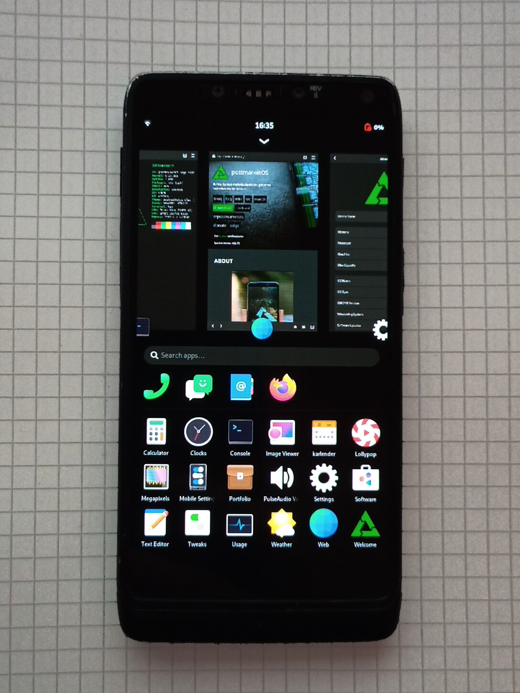

Motorola RAZR i (XT890) (motorola-smi)
Jump to navigation
Jump to search
|
 Motorola RAZR i running the Phosh UI | |
| Manufacturer | Motorola |
|---|---|
| Name | RAZR i |
| Codename | motorola-smi |
| Released | 2012 |
| Category | testing |
| Original software | Android |
| Original version | 4.4.2 |
| postmarketOS kernel | 6.2.7 |
| Hardware | |
| Chipset | Intel Atom Z2460 Medfield |
| CPU | 2 GHz single-core Saltwell with HT |
| GPU | PowerVR SGX 540 @ 400 MHz |
| Display | 4.3″(10.9cm) edge-to-edge qHD Super AMOLED Advanced touchscreen, 540×960 pixels (256 dpi), 16M colors |
| Storage | 8 GB flash memory |
| Memory | 1 GB RAM |
| Architecture | x86 |
| Type | handset |
{kind=link}
| USB Networking |
Works
|
|---|---|
| Flashing |
Works
|
| Touchscreen |
Works
|
| Display |
Works
|
| WiFi |
Works
|
| FDE |
Works
|
| Mainline |
Works
|
| Battery |
Partial
|
| 3D Acceleration |
Broken
|
| Audio |
Broken
|
| Bluetooth |
Broken
|
| Camera |
Broken
|
| Camera Flash | |
| GPS |
Broken
|
| Mobile data |
Broken
|
| SMS |
Broken
|
| Calls |
Broken
|
| USB OTG / USB-C Role switching |
Unavailable
|
| NFC |
Broken
|
| Accelerometer |
Broken
|
|---|---|
| Magnetometer | |
| Ambient Light | |
| Proximity | |
| Hall Effect | |
| Barometer | |
| Power Sensor | |
| Keyboard | |
|---|---|
| Touchpad | |
| USB-A | |
| HDMI/DP | |
| Ir TX |
Unavailable
|
| Ir RX | |
| Stylus | |
| Haptics | |
| Ethernet | |
| FOSS bootloader | |
Contents
Contributors
Users owning this device
How to enter flash mode
- Hold Power + Volume Down buttons
- Release Power button as soon as device vibrates
Installation
- Bootloader must be unlocked
- Bootloader from Android 4.0 firmware doesn't support standard bootimg format. Bootloader from Android 4.1 firmware or later should work
- Installation with
pmbootstrap flashershould work.
Notes
GPU acceleration with the PowerVR SGX540 is not available, but the software based pixman renderer works quite well on the device's x86 CPU.
What works:
- booting pmOS with phosh
- installing applications
- browsing the web
- display brightness adjustment
- charging over USB
What doesn't
- CPU-freq / CPU-idle / Powemanagement
- Device runs in full power mode and drains battery quickly
Mainline
The internal peripherals of the Intel Medfield SoC can be discovered by PCI and mostly already work with the mainline kernel drivers.
Intel MID devices where designed to boot using Intel's "Simple Firmware Interface" (SFI). The mainline implementation of SFI was quite messy and has recently been dropped in newer releases. Therefore, the second stage bootloader Petitboot is used to boot newer kernels with kexec and devicetree.
See also
- pmaports!3774 Initial merge request (motorola-smi)
- Device package
- Kernel package